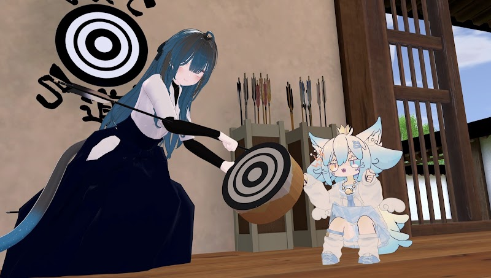
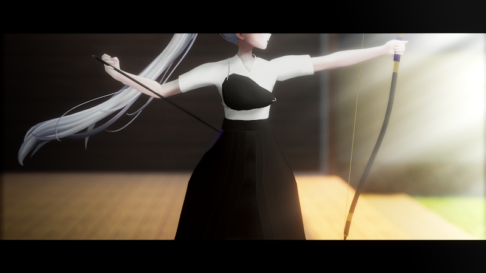
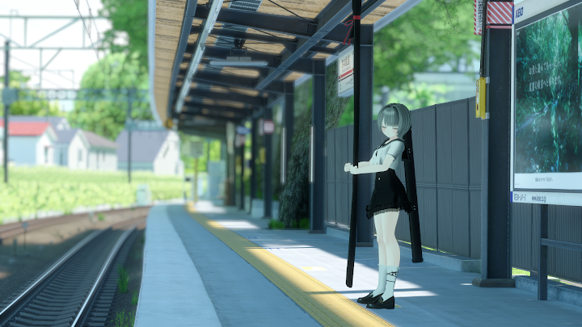
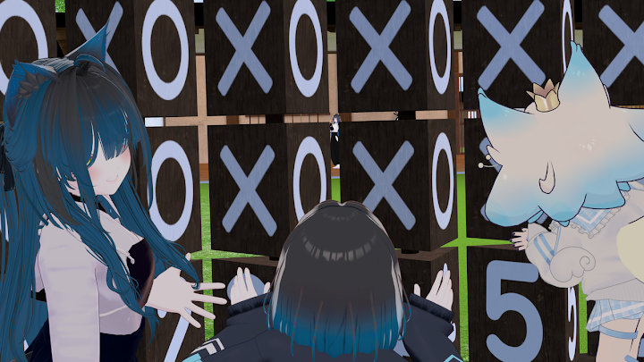
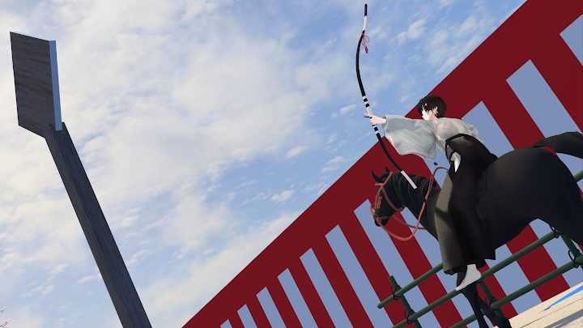
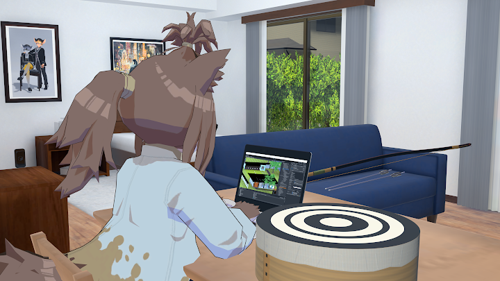
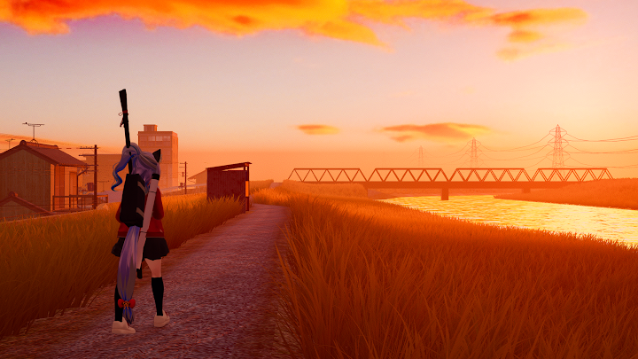
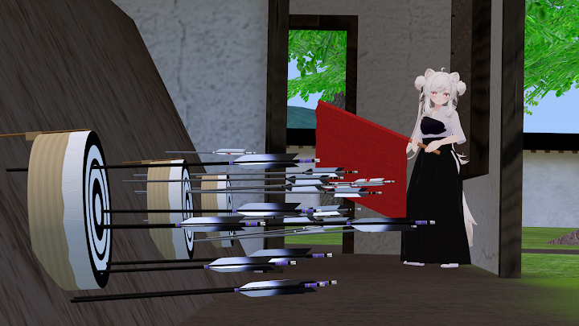

最優秀作品賞 / 最多得票賞


最優秀作品賞 / 最多得票賞
優秀作品賞

構図も表現も綺麗…
弓を引くこの一瞬にと思わせるまさに動きのある絵だと思いました。
優秀作品賞

一目惚れ
電車の高さ気をつけがち
優秀作品賞

すっごく可愛いです！！
試合の度にこうして見てた思い出
優秀作品賞

流鏑馬の難しさが伝わる写真だと思いました。被写体が大きければ1位でした
優秀作品賞

分かり味が深すぎてマリアナ海溝にいるのかと思った
優秀作品賞

ノスタルジーを感じてエモくなりました
練習終わりの一枚って感じで好きです。本当に個人的にですが複数人いたらもっといい1枚だと思います。
優秀作品賞

すっごくわかるあるあるですね～
この後継ぎ矢する悲劇が待ってそう
#VRC弓道フォトコン2026 に作品をお寄せくださった皆さま、投票にご参加くださった皆さま、そして開催を支えてくださったVRC弓道部の関係者の皆さまに、心より御礼申し上げます。今年は1作品が最優秀作品賞と最多得票賞を同時受賞し、優秀作品賞7作品と合わせて、計8作品をご紹介することとなりました。
上位2作品による僅差のトップ争いを制し、最優秀作品賞と最多得票賞を同時受賞したのは、シトリンさんの『とれなくなっちゃった！』でした。おそらく弓道経験者以外には伝わらないであろう、緊迫したシーン（？）を描いた作品です。次点は、残心の余韻を力強く描いた、まーさんの『残心』でした。
上位2作品が「弓道体験を通した喜怒哀楽」と「射の美しさ」という、弓道の「緩急」を象徴していることは、昨年のトップ争いを彷彿とさせます。2025年のフォトコンでも、シトリンさんの『握りあるもの、全てに手の内』（最多得票賞）と、離れの一瞬を劇画調に切り取った、はまちゃさんの『離れ』（最優秀賞）がトップを競っていました。
投稿作品全体では、直接的に「射」を扱った作品が最も多く寄せられました。その中で、特に「静」の瞬間を印象的に切り取った『残心』が受賞しました。対照的に、馬の駆ける姿と射手のダイナミックな動きを流鏑馬で描いた、秋さんの『相棒』も受賞しています。日々の練習のワンシーンを切り取った作品では、看的小屋から射場を垣間見る、シトリンさんの『憧れの先輩』と、矢取り前の風景を描いた、伊予ハブ部長の『そろそろ矢取りかな…？』が受賞しました。
ひとたび道場を離れると、長い弓を担いだ移動風景も印象的です。伊予ハブ部長の『休日練習』と、笛射乃ゆみさんの『青春の一矢は夕焼けに溶けて』が、そうした場面を描いた受賞作品です。また、『Ｂ. 弓道を学んで良かったと思うことを述べなさい。』（拙作）は、タイトルを含めネタ枠のつもりだったのですが、一部の方に強烈に刺さったようで受賞いたしました。ありがとうございます。
ここでご紹介できなかった作品も含め、とても個性的で印象的な作品が揃っております。ページ下部のリンクから、ぜひ全作品もじっくりご覧ください。本フォトコンは、9月10日の「弓道の日」にちなみ、弓道文化の振興ならびにVR弓道の普及を目的として、2025年より開催しております。寄せられた写真が伝える弓道の魅力が、これからの活動や新たな交流の一助になれば幸いです。
令和8年10月吉日
一般投票では、各投票者が選んだ1位から5位の作品に、それぞれ10・7・5・3・2点を付与し、作品ごとの得点を集計しました。合計得点が最も高い作品を最優秀作品賞、順位にかかわらず選ばれた回数が最も多い作品を最多得票賞とし、得点上位の作品を優秀作品賞に選定しました。表彰する作品数は、参加作品数と得点の分布を考慮して決定しました。
重複投票の防止のため、投票時にXのアカウント名をご申告いただきました。
作品を投稿された方は、マイページでご自身の作品の得票状況と投票コメントをご覧いただけます。
投票コメント